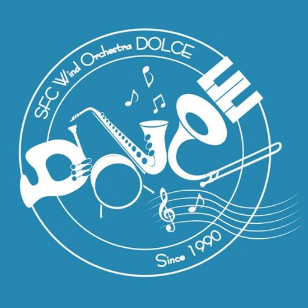
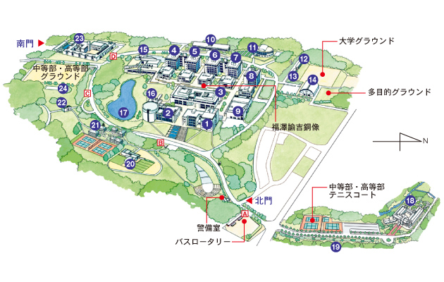

ドルチェ紹介
ドルチェとは？
 SFC Wind Orchestra Dolceは、
演奏だけではなく構成や演出にも力を入れていて、「お客様に楽しんでいただけるステージ」を目指して、現在1年生から4年生まで約70人で楽しく活動しています。
他の吹奏楽団体と違い、大学から楽器をはじめる人の割合が高く、またそれぞれがやりたい楽器を(楽器がなければ貸し出しもできます)やることができます！
様々な活動・イベントがあります！
Dolceでは様々な活動が行われています。
| ４月 | ・新勧イベント(ピザパーティーなど) | |
|---|---|---|
| ５月 | ||
| ６月 | ・ディズニー曲の録画 ・ディズニーリゾートへの応募 |
|
| ７月 | ・七夕祭 ディズニー曲を中心に第2ステージで演奏します。 |
|
| ８月 | ・御宿(非公式) 千葉県御宿にて海水浴などをするイベントです。 |
|
| ９月 | ・合宿(河口湖周辺にて) ・ディズニーリゾートでの演奏 ・ドルチェ音楽祭 |
|
| 10月 | ・秋祭 アンサンブル演奏を教室で行います。 |
|
| 11月 | ・定期演奏会 | |
| 12月 | ・クリスマスパーティー | |
| １月 | ||
| ２月 | ・追いコン 卒業する4年生を送るイベントです。 |
|
| ３月 | ||
|
※活動時期について 七夕祭終了後から9月頭の合宿まで、定期演奏会後、試験期間前など、 サークル全体としての練習自体がない時期もあります。 オフシーズンは、楽器は使わず楽しむだけのイベントが多いです。 |
||
そのなかでも特に大きなイベントが以下の2つです！
ディズニーでの演奏
Dolceでは、東京ディズニーリゾート主催の「ミュージック・フェスティバル・プログラム」に毎年応募しています。そして、Dolceは2009年から2012年まで4年連続で合格し、9月にディズニーリゾートで演奏する機会をいただいています。
2013年度も5年連続合格を目指して練習し、6月8・9日にθ館で録画を行いました。
その録画をディズニーリゾートへ応募し、毎年8月にある発表を現在部員一同結果を心待ちにしています。
定期演奏会
ディズニーでの演奏が終わると、例年11月に行われる定期演奏会に向けての練習がはじまります。 ポップス曲だけではなくシンフォニック曲も含めて、様々な曲を演奏します。
2013年12月1日、相模女子大学グリーンホールにて第22回の定期演奏会が行われます。
お客さんに楽しんでもらえることを第一としていて、きっと楽しめるはずですので、皆様お誘い合わせのうえ、ぜひお越しください。
今後の演奏予定
ふだんの練習日程・場所など
・練習日・時間
・活動場所
Ψ(サイ)館211号室・θ(シータ)館
※Ψ211：右図の12番の建物,2階一番奥
※θ：右図の9番の建物

画像をクリックで拡大表示します！
新入部員募集中！
ドルチェでは新入部員を随時募集しています。{kind=link}
{kind=link}